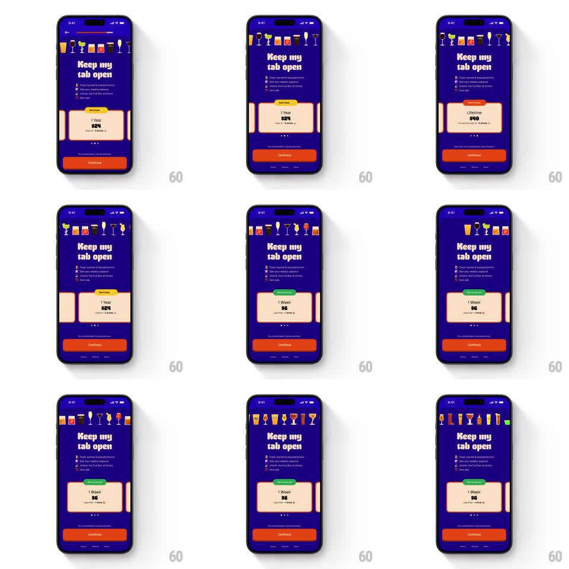

Media
Frame-by-frame

Rebuild this animation 1:1: BurnBar's pricing marquee - an endless horizontal strip of drink icons scrolls across the top of the paywall while plan cards (1 Week, 1 Year, Lifetime) swipe through a springy carousel beneath the "Keep my tab open" headline.

Rebuild this animation 1:1: BurnBar's pricing marquee - an endless horizontal strip of drink icons scrolls across the top of the paywall while plan cards (1 Week, 1 Year, Lifetime) swipe through a springy carousel beneath the "Keep my tab open" headline. ## Integration Integration: stack-agnostic spec - springs given as stiffness/damping, timed motions as duration + curve; map every value to your framework and animation library of choice. ## Scene Paywall on electric blue: marquee strip of drink icons across the very top, "Keep my tab open" headline and feature list below, then the plan card carousel (cream cards with a tag pill like "Popular" or "Best Value", price, and cadence line), page dots, and a filled "Continue" button. ## Motion spec Pattern: seamless icon marquee plus a spring-loaded card carousel. - The marquee scrolls continuously left at ~40px/s, wrapping seamlessly (icons duplicated so there is no gap); slight vertical wobble per icon (+/- 3px, sine, phase-offset). - Plan cards snap-swipe horizontally: drag beyond ~25% width triggers the snap; the card springs to center (spring ~300/20) with neighbors peeking in from both edges at ~80% scale. - On snap, the incoming card's tag pill pops (scale 0.8 -> 1, spring ~320/18) and page dots slide to the active position. - Continue button stays fixed; its label may update with the selected plan. ## Calibration - Marquee is ambient background texture - lower contrast than the content, never distracting from the cards. - Card carousel is the hero interaction - the snap must feel magnetic. ## Reduced motion Marquee is static; cards crossfade on selection with no peek motion. ## Don't miss - Marquee loops seamlessly - no visible restart point. - Cards tilt a degree or two while being dragged and settle straight on snap.